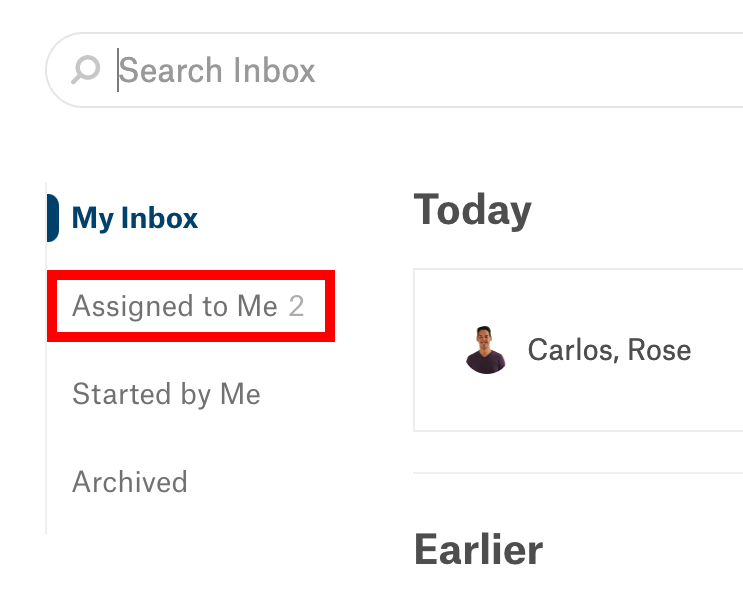

Using Your Inbox¶
Alation Cloud Service Applies to Alation Cloud Service instances of Alation
Customer Managed Applies to customer-managed instances of Alation
In Alation, your Inbox serves as a central hub for all your interactions with other catalog users. It keeps records of your past messages and notifies you when another user contributes to something you’re invested in.
For the most part, your Inbox contains Conversations that you’ve participated in. It may also include notifications from workflows that you review. The sections below will help you to recognize Inbox notifications, access your Inbox, and view its contents.
Inbox Notifications¶
Your Inbox notifies you when you receive a workflow task or one of your Conversations is updated. If the Inbox contains new notifications, a blue dot will appear on the My Inbox icon in the top toolbar.
Access your Inbox to view your new Conversations or workflow task notifications. Once you view the notifications, the blue dot will disappear from the My Inbox icon.
Accessing Your Inbox¶
To open your Alation Inbox from any catalog page, click the My Inbox icon displayed on the right side of the top toolbar.
In some cases, you can also open your Inbox from a Conversation that you’re viewing in full-page view or inside a Conversations slideout.
If the Conversation is one that’s in your Inbox, there will be an Open My Inbox icon in its upper-right corner. Click the icon to access your Inbox.
{kind=link}
Inbox Contents¶
Alation organizes your Inbox according to the different types of messages it contains. Notifications about workflows you review go in the Tasks tab, and the Conversations tab contains all the catalog Conversations that you’re a part of.
When you open your Inbox, Alation automatically displays the Conversations tab. You can go to the Tasks tab by clicking the Tasks tab label.
The sections below describe the contents of the Conversations and Tasks tabs in more detail.
Conversations Tab¶
The Conversations tab allows you to view and interact with the Conversations in your Alation Inbox in multiple ways:
Open a new Conversation page with the + Conversation button. See Posting a New Conversation for instructions on creating a Conversation.
Find a Conversation in your Inbox using the search box.
See all of your active Conversations and in the My Inbox area. You may also see Agile Approval notifications here.
View all the Conversations you started or had assigned to you in the Started by Me and Assigned to Me areas.
Move a Conversation from My Inbox to the Archived area.
When a Conversation you’re interested in appears in your search results or an Inbox area, click it to expand it in the reading pane. From the expanded view, you can see the Conversation’s contents and interact with it just as you would in the catalog.
The sections below provide more details about using the search box, viewing Conversations in the Alation Inbox areas, and moving Conversations to the Archived area.
Using the Search Box¶
To find a Conversation based on its content, enter text in the search box below the Conversations and Tasks tab labels. As you type, the reading pane will be populated with Conversations from all four Inbox areas. When you see the Conversation you’re looking for in the search results, click it to expand it inside the reading pane.
Note
The Conversations tab search box lists Conversations as results if they have a subject line, body text, reply, assignee, author, or participant who’s posted a comment that matches your search terms. To learn more about these Conversation components and user-interaction roles, see Conversations and Interacting with Conversations.
My Inbox¶
When you open the Conversations tab, the reading pane automatically displays your My Inbox area in the reading pane. The My Inbox area contains Conversations where:
You posted a comment.
You were named as an assignee.
You were @-mentioned in the initial post or a comment.
You started the Conversation and someone else replied.
The My Inbox area lists Conversations according to user interactions, with the Conversations that users have interacted with recently at the top of the reading pane.
Alation will display the number of new or updated Conversations My Inbox contains beside My Inbox in the list of Inbox areas. Inside the My Inbox area, new or updated Conversations will be displayed in bold.
Assigned to Me¶
The Assigned to Me area contains only catalog Conversations that have been assigned to you. Alation displays the number of open Conversations assigned to you next to Assigned to Me in the list of Inbox areas. Inside the Assigned to Me area, new or updated Conversations are displayed in bold.
{kind=link}
Note
By default, the Assigned to Me area only displays Conversations that haven’t been marked resolved. To include resolved Conversations, click the Show Resolved checkbox displayed above the reading pane. The reading pane will be updated to include both resolved and open Conversations that are assigned to you.
Started by Me¶
The Started by Me area contains every catalog Conversation that you’ve started. It displays new or updated Conversations in bold.
Note
By default, the Started by Me area only displays Conversations that haven’t been marked resolved. To include resolved Conversations, click the Show Resolved checkbox displayed above the reading pane. The reading pane will be updated to include both resolved and open Conversations that you started.
Archiving Conversations¶
The Conversations tab allows you to make any Conversation in your Alation Inbox less visible by moving it to the Archived area. When you archive a Conversation, Alation removes it from the My Inbox area and places it in the Archived area instead.
Note
Archived Conversations are still included in the Assigned to Me and Started by Me Inbox areas.
Archiving a Conversation also doesn’t change its visibility in the catalog. Archived Conversations still appear alongside other Conversations in the Conversations panel, Conversations slideout, and on the search page.
To change a Conversation’s visibility in the catalog and discourage future users from adding responses, delete the Conversation or mark it as resolved.
To archive a Conversation inside your Inbox, follow the steps below.
Select My Inbox from the list of Inbox areas.
Click the Conversation you’d like to archive. It will expand inside the reading pane.
Click the Archive icon in the upper-right corner of the Conversation. The icon will turn green, and Alation will move the Conversation to the Archived area of your Inbox.
You can also unarchive a Conversation that you previously moved to the Archived area. To unarchive a Conversation from inside your Inbox, follow the steps below.
Select Archived from the list of Inbox areas.
Click the Conversation you’d like to unarchive. It will expand inside the reading pane.
Click the Archive icon in the upper-right corner of the Conversation. The icon will change colors from green to gray, and Alation will restore the Conversation to the My Inbox area.
If a Conversation is included in your Inbox, you can also archive or unarchive it from inside a Conversations slideout by following the steps below.
Navigate to the catalog page that includes the Conversation in its slideout.
Click the slideout tab to open the Conversations slideout.
Click the Conversation you’d like to archive or unarchive. It will expand inside the Conversations slideout. If the Conversation is included in your Inbox, there will be an Archive icon in its upper-right corner.
Click the Archive icon to archive or unarchive the Conversation. The icon will be green if the Conversation is currently archived and appear gray if it is not archived.
{kind=link}
Tasks Tab¶
The Tasks tab organizes all of your workflow notifications in one place. You receive a notification in the Tasks tab when a user suggests a change to a catalog object enrolled in a workflow and the workflow progresses to a step where you are listed as a reviewer. When your Tasks tab contains a workflow notification, a blue dot will appear on the My Inbox icon in the top toolbar.
The Tasks tab contains a Go to Workflow Center button and a My Tasks table. The My Tasks table lists all of your workflow notifications with details about where the change was suggested, who suggested it, and when they made their suggestion.
From the Tasks tab, you can click the Go to Workflow Center button to open the Workflow Center and view workflow details there. You can also use the links in workflow notifications to open the catalog page where the change was suggested and approve or reject it. For more instructions about interacting with workflow tasks, see Workflow Review Tasks in the Suggesting Changes topic.
Next¶
You can learn more about Conversations and discover ways to participate in them by accessing these topics: